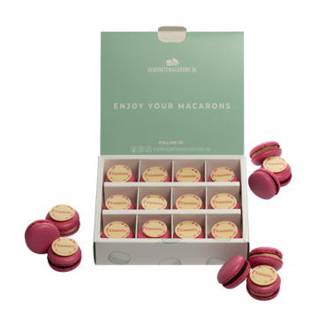
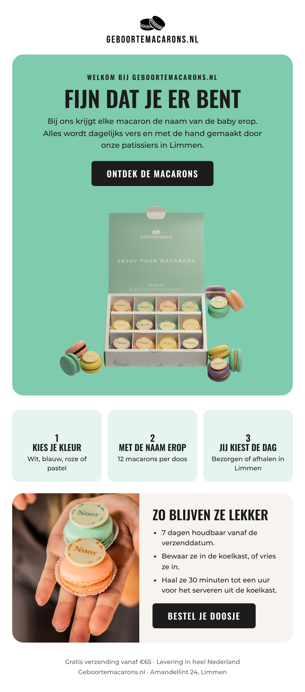
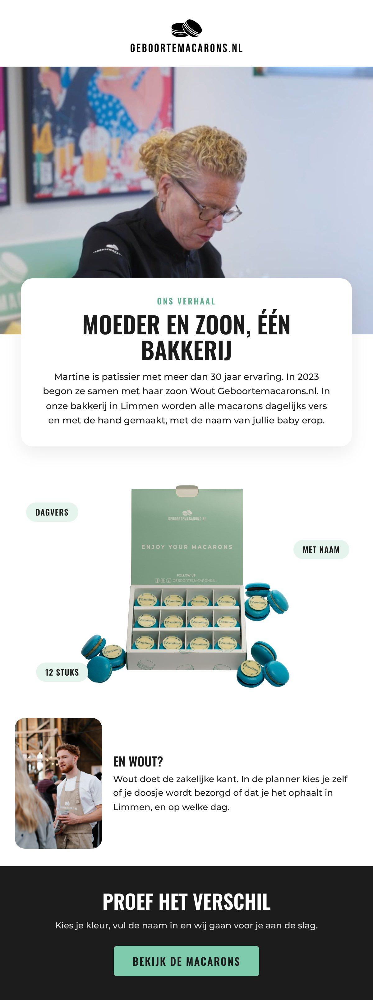

Voorbeelden voor Geboortemacarons.nl
Vijf redenen om de naam van een baby op een macaron te zetten.
Vijf advertenties en twee nieuwsbrieven, gemaakt met jullie eigen foto's en productinformatie. Een idee van Issey Kooijmans van Digital Essence; niets hiervan is gepubliceerd.
Hoi team Geboortemacarons.nl, een doosje macarons met de naam van de baby erop is een kraamcadeau dat je in één foto snapt. Met jullie eigen foto's heb ik daar vijf advertenties en twee nieuwsbrieven van gemaakt. Niets is gepubliceerd. Past het niet, zeg het gerust.
Eerst even uitgelegd
Wat is een invalshoek?
Een invalshoek is de reden waarom iemand iets koopt. Hetzelfde doosje macarons kun je op heel veel manieren verkopen, omdat niet iedereen om dezelfde reden koopt.
Hetzelfde doosje macarons, vijf verschillende redenen om het te kopen. Elke reden wordt een eigen advertentie.

- 01Iemand zoals ik"Wat neem ik mee als ik op kraamvisite ga?"
- 02Het gevoel"Wat een lief idee, wat is dat?"
- 03Hoe het werkt"Hoe werkt dat, en kan ik zelf de dag kiezen?"
- 04Bewijs"Zijn ze wel echt zo lekker en komen ze op tijd?"
- 05Een goede deal"Wat kost het allemaal bij elkaar?"
We testen die invalshoeken naast elkaar. Na een paar dagen zie je welke het meest verkoopt. Daar maken we er meer van, en wat niet werkt, gaat eruit.
Zo werk ik
Van eerste blik tot bestelling.
Niet iedereen die een advertentie ziet, is meteen klaar om te kopen. Daarom maak ik voor elke stap andere advertenties. Zo spreek je iedereen aan op het moment waar hij of zij zit.
- Stap 1 · Top of funnel
Kennismaken
Mensen die Geboortemacarons.nl nog nooit hebben gezien.
Doel: dat ze stoppen met scrollen en nieuwsgierig worden.
Zoals een etalage: je loopt langs en kijkt even naar binnen.
- Stap 2 · Middle of funnel
Overtuigen
Mensen die jullie al eens zagen, maar nog twijfelen.
Doel: hun vragen beantwoorden. Wat is het, waarom dit en niet iets anders?
Zoals een verkoper die rustig uitlegt wat het verschil is.
- Stap 3 · Bottom of funnel
Kopen
Mensen die bijna willen bestellen.
Doel: het laatste duwtje, zoals een aanbod, reviews of de zekerheid van gratis retour.
Zoals de kassa: duidelijk, makkelijk en zonder risico.
Wat ik zag: Geboortemacarons.nl heeft in Nederland nu 3 advertenties live, en de nieuwste is in maart gestart. Twee daarvan zijn gepromote Instagram-berichten. Deze set begint bij de kraamvisite en het gevoel van een naam op een macaron, legt daarna uit hoe bestellen werkt en waarom 30.000+ mensen jullie al kozen, en eindigt met een echt duwtje: gratis verzending vanaf €65.
Advertenties · 9:16
Vijf advertenties, verdeeld over de stappen.
Tik op een advertentie om hem groot te bekijken.
Voor mensen die Geboortemacarons.nl nog niet kennen.
Voor mensen die jullie kennen, maar nog twijfelen.
Voor wie bijna bestelt.
Waarom advertenties
Zo groeien babymerken op Instagram.
Aanstaande ouders en hun vrienden ontdekken een nieuw merk vaak niet via Google, maar tijdens het scrollen op Instagram. Elke week worden er weer nieuwe baby's geboren, dus er komt steeds een nieuwe groep kopers bij. Merken die elke week nieuwe advertenties testen, vinden die mensen steeds opnieuw. Een nieuwsbrief zorgt daarna dat kopers terugkomen voor de volgende baby, verjaardag of bruiloft.
Aantal advertenties: Meta Advertentiebibliotheek, 25-11-2026.
Nieuwsbrief 1 van 2 · Welkomstmail
Fijn dat je er bent.
Een welkomstmail voor iedereen die zich aanmeldt via het formulier 'Blijf op de hoogte'. Die legt in drie stappen uit hoe bestellen werkt en geeft meteen de bewaartips, zodat de eerste bestelling goed gaat.
- Drie stappen: kleur, naam, dag
- Bewaartips uit jullie veelgestelde vragen: 7 dagen houdbaar, koelkast of vriezer
- Gratis verzending vanaf €65 onderaan

Nieuwsbrief 2 van 2 · Merkverhaal
Moeder en zoon, één bakkerij.
Een mail over Martine en Wout en de bakkerij in Limmen. Juist bij iets dat je eet wil je weten wie het maakt.
- Martine, patissier met meer dan 30 jaar ervaring
- Dagvers en met de hand gemaakt in Limmen
- Afsluiter: kies je kleur en vul de naam in

Ritme
Zo kan een week eruitzien.
Dit is een voorbeeld, geen vast pakket. De kracht zit in het ritme: regelmatig nieuwe invalshoeken testen in elke stap, en je nieuwsbrief vast versturen. Wat werkt, doen we vaker.
- MaNieuwe advertenties liveNieuwe invalshoeken in elke stap tegelijk testen.
- DiMeekijkenWelke invalshoek pakt de doelgroep op?
- WoBijsturenBudget naar wat werkt, de rest eruit.
- DoNieuwsbrief verstuurdVast moment, zodat lezers erop gaan rekenen.
- VrKorte updateWat werkte en wat we volgende week doen.
Benieuwd hoe dit voor Geboortemacarons.nl werkt?
Een kwartiertje bellen is genoeg om te kijken of het past. Geen verplichtingen.